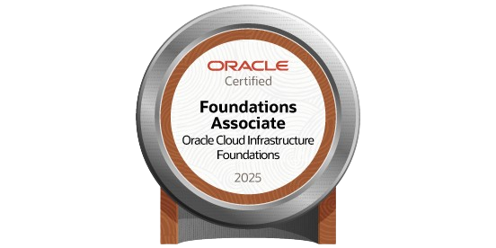
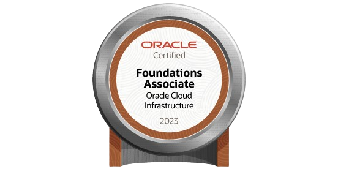

Apaixonado por tecnologia desde os 7 anos, transformando infraestruturas e implementando soluções inovadoras com Python.
Minha jornada na tecnologia começou ainda criança, quando aos 7 anos já criava notebooks de papelão e simulava redes com caixas de bombom. Aos 12 anos iniciei um curso de montagem e manutenção de computadores, e desde então nunca deixei de aprender. Em 2017 tive meu primeiro emprego na Ecovia como jovem aprendiz, e logo depois na Cotrasa, onde entrei no estoque e saí como Assistente de TI, dando início de fato à minha carreira na TI.
Em 2022 cheguei à Transmoreno, onde pude me desenvolver em áreas como infraestrutura, cloud e principalmente cibersegurança, executando projetos de migração, automação e segurança de ambientes. Hoje sigo apaixonado pela TI, atuando nos bastidores para que tudo funcione de forma estável e segura, pois acredito que essa é a verdadeira magia da tecnologia.
Comecei como Jovem Aprendiz, auxiliando usuários e organizando documentação.
Evolui para Assistente de TI em infraestrutura, implementando soluções complexas.
Focado em Infraestrutura em Cloud e Cybersecurity, sempre buscando inovação e novas tecnologias.
Início da carreira auxiliando no atendimento aos usuários, organização de documentos e controle de estoque.
Minha mãe me colocou em um curso de Montagem e Manutenção de Computadores. Curioso, também buscava vídeos no YouTube para entender como tudo funcionava. Nesse período fiz cursos de Administração e Inglês.
Aos 7 anos, brincava de montar computadores com papelão, criando teclados e telas como se fossem notebooks. Usava caixas de bombons como switches e hubs — minha primeira "rede" nasceu na imaginação.
Migração completa do ambiente On-premises para Oracle Cloud Infrastructure, otimizando custos e melhorando performance.
Implantação de Zero Trust Network Access com Cloudflare, aumentando significativamente a segurança da rede.
Desenvolvimento de automações para bloqueio/desbloqueio de usuários baseado no sistema HCM da empresa.

Emissor: Oracle
Obtido em: Setembro/2025
Expira em: Setembro/2027
Ver credencial
Emissor: Oracle
Obtido em: Julho/2024
Expira em: Julho/2026
Ver credencial